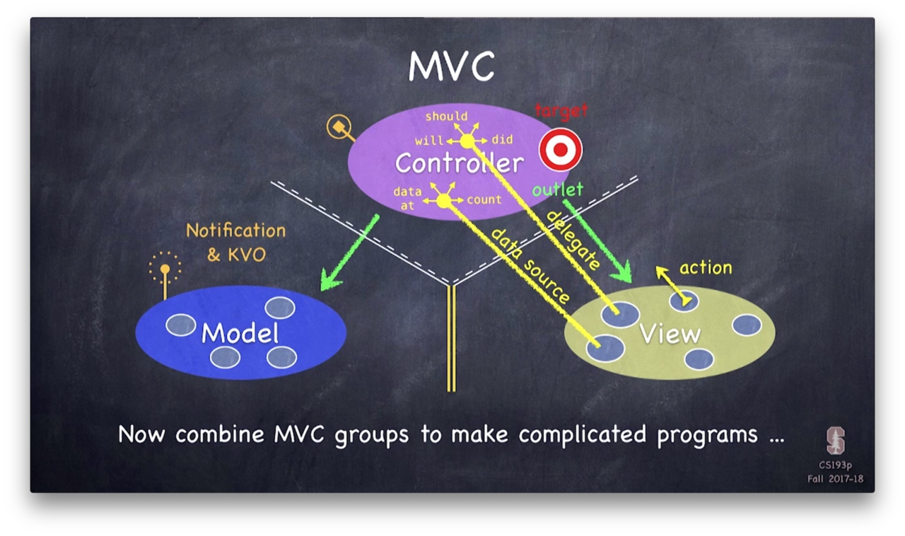
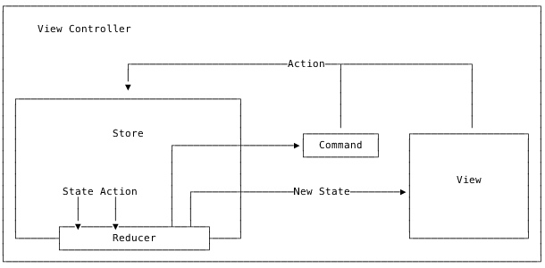

MVC
苹果关于 MVC 的介绍
如何使 UIViewController 更整洁
ObjC 中国 - 更轻量的 View Controllers
如何写出更好的 MVC
A Better MVC, Part 1: The Problems
问题：
- 违反封装，充斥着大量面条代码
- Massview View Controller
解决办法： 开发者为了解决上面两个问题通常会使用其它架构方式。但是会增加团队成员的学习成本。系统更新时也有可能需要更多时间来进行适配，同样地，如果你依赖了其它第三库，还需要等得第三库的更新。
A Better MVC, Part 2: Fixing Encapsulation
对 View Controller 进行解耦，View Controller 不需要知道其它 View Controller ，做法是生成一个更高层 View Controller，这个 View Controller 不包含其它逻辑，只负责对 View Controller 的跳转进行处理。所有子 View Controller 都通过它来进行跳转。
A Better MVC, Part 3: Fixing Massive View Controller
1 View Controller ≠ 1 screen of content
开始写 app 时，我们都会使用一个 View Controller 来表示一个屏幕的内容，但是当 app 变得复杂时，我们可以将某些比较复杂的界面分成多个小的 View Controller。
A Better MVC, Part 4: Future Directions
承接上面所说的 1 View Controller ≠ 1 screen of content，单个 cell 也可以使用单个 ViewController 来管理，将 cell 中的逻辑分离出来。 总结：
- 使用 View Controllers 来分解 UI
- 使用 View Controllers 来管理列表控件
- View Controllers 不一定要填充屏幕
A Better MVC, Part 5: An Evolution
作者在五个月后又写了一篇关于 MVC 的文章。
MVC 不是一种设计模式，是一种思想，它追求封装，将不同的东西分隔开来。 View Controller 其实不是 Controller，而是 View，它负责的其实是 View 相关的逻辑。 View Controller 应该只负责处理业务逻辑或者传递数据给它包含的 UIViews，不应该两者都包含。 UIViewControllers 应该只负责下面的其中一个部分：
- 组合 Child View Controller
- 给自己拥有的 UIViews 填充数据
So instead of saying a UIViewController should “manage either sequence or UI”, perhaps a better way of saying it would be that a UIViewController should either compose children or put stuff in to UIViews (with the understanding that this is a guideline, and not a rule).
关于 MVC 的一个常见的误用
传统 MVC 由于自由度非常大，没有规则显示，在经过业务迭代后，稍不注意 ViewController 就会膨胀为 Massive View Controller ，一些潜在问题：
- 包含 Model 层；
- 违反数据流动规则和单一职责。

作者通过将 Model 层抽出和借助 KVO 简单录了一个单向流的 MVC ，意在说明即使没有借用其他结构（比如说 MVVM 和 RxSwift ），也可以写出一个符合规范和易维护的 ViewController 。
单向流数据流动
传统 MVC 的问题：
- 修改 UI 的代码到处散落，随着逻辑变得复杂， UI 的状态将难以追踪；
- 难以测试；
- 无法重构。
结合纯函数将其重构为单向流：
func reducer(state: State, userAction: Action) -> State
输出结果 State 只受输入 state 和 userAction 影响，在两者相同的情况下，输出 state 永远相同，其原理与 Swift 中的 reduce 函数类似：
func reduce<Result>(_ initialResult: Result,
_ nextPartialResult: (Result, Element) throws -> Result) rethrows -> Result
在实际使用中，仅仅靠纯函数可能无法满足我们的需求，有时候还希望有“副作用”选项，希望在完成异步操作后可以执行对应的 command ：
func reducer(state: State, userAction: Action) -> (State, Command?)
整体的架构图

使用一个 Store 来存储 subscriber 和相关数据：
protocol ActionType {}
protocol StateType {}
protocol CommandType {}
class Store<A: ActionType, S: StateType, C: CommandType> {
let reducer: (_ state: S, _ action: A) -> (S, C?)
var subscriber: ((_ state: S, _ previousState: S, _ command: C?) -> Void)?
var state: S
init(reducer: @escaping (S, A) -> (S, C?), initialState: S) {
self.reducer = reducer
self.state = initialState
}
func subscribe(_ handler: @escaping (S, S, C?) -> Void) {
self.subscriber = handler
}
func unsubscribe() {
self.subscriber = nil
}
func dispatch(_ action: A) {
let previousState = state
let (nextState, command) = reducer(state, action)
state = nextState
subscriber?(state, previousState, command)
}
}
ViewController 通过 subscribe 方法来订阅数据源的改动进行 UI 调整， 通过 dispatch 传递 action 。同时也编写了一些单元测试来证明其可测试性。
这里在没有接入三方库的情况实现了单向数据流，如果想要尝试，也可试一下
Objective-C 版本在这里：
提供了一个 RFStore 的 Store 基类，内部做了一些 hook 处理，对于 action 开头的 selector 调用，都会调用 listeners 的 block ：
+ (void)hookActionMethodsIfNeededForClass:(Class)class {
static const void * const kHasHookedKey = &kHasHookedKey;
@synchronized(class) {
id hasHooked = objc_getAssociatedObject(class, kHasHookedKey);
if (!hasHooked) {
unsigned int outCount = 0;
Method *methods = class_copyMethodList(class, &outCount);
for (unsigned int i = 0; i < outCount; ++i) {
Method method = methods[i];
SEL selector = method_getName(method);
NSString *methodName = NSStringFromSelector(selector);
if (![methodName hasPrefix:@"action"]) {
continue;
}
[RFStore registerActionForClass:class selector:selector];
}
objc_setAssociatedObject(class, kHasHookedKey, @YES, OBJC_ASSOCIATION_RETAIN_NONATOMIC);
}
}
}
+ (void)registerActionForClass:(Class)class selector:(SEL)selector {
[class rfaspect_hookSelector:selector
withOptions:AspectPositionAfter
usingBlock:^(id<RFAspectInfo> aspectInfo) {
RFAction *action = [[RFAction alloc] initWithObject:aspectInfo.instance
selector:selector
arguments:aspectInfo.arguments];
NSArray *globalListeners = [objc_getAssociatedObject([RFStore class], kListernersKey) allObjects];
NSArray *listeners = [objc_getAssociatedObject(action.object, kListernersKey) allObjects];
dispatch_async(dispatch_get_main_queue(), ^{
for (RFSubscription *subscription in globalListeners) {
subscription.block(action);
}
for (RFSubscription *subscription in listeners) {
subscription.block(action);
}
});
}
error:nil];
}
listeners 使用 weak 的 NSPointerArray 进行存储，所以当 ViewController 释放后， RFStore 也会释放掉：
+ (void)associateObject:(id)object withSubscription:(RFSubscription *)subscription {
@synchronized(object) {
NSPointerArray *listeners = objc_getAssociatedObject(object, kListernersKey);
if (!listeners) {
listeners = [NSPointerArray weakObjectsPointerArray];
objc_setAssociatedObject(object, kListernersKey, listeners, OBJC_ASSOCIATION_RETAIN_NONATOMIC);
}
[listeners compact];
[listeners addPointer:(void *)subscription];
}
}
作者在最后提到对于 Reflow ，更重要的是其架构设计和规范：
- model 对象不可变；
- 整个 app 的数据存于 store 层；
- 更新和通知也收拢于 store 层。